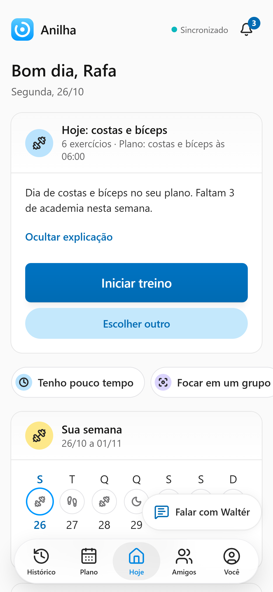
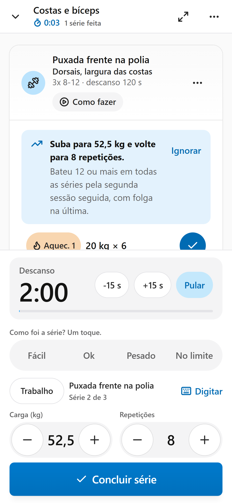
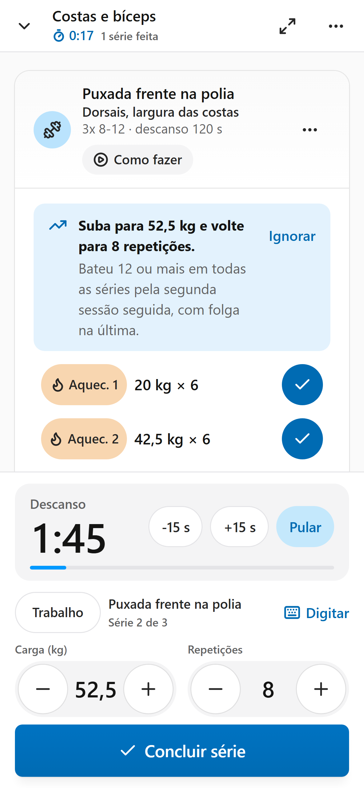
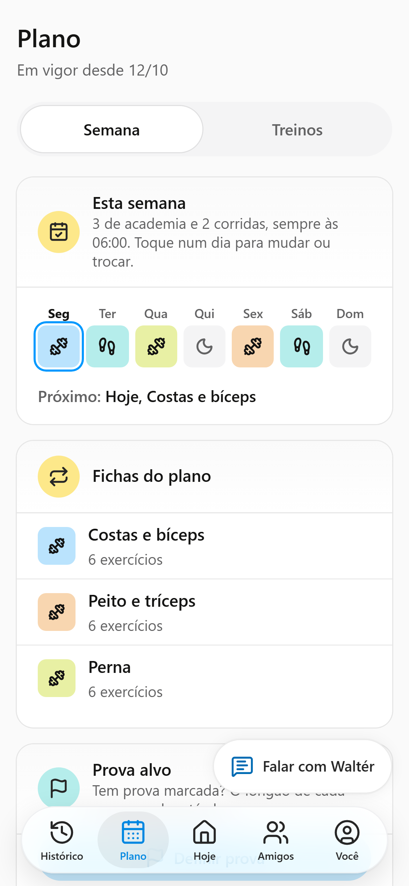
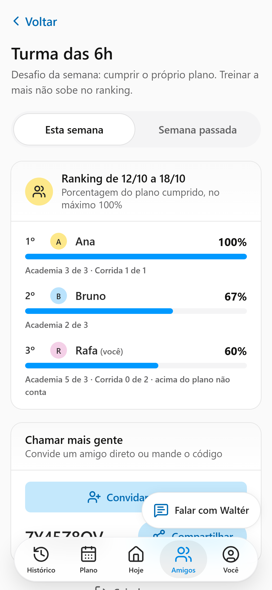

Anilha
Anilha
Seu treino da semana,
montado.
Cada série,
num toque.







Abre e já sabe
o que treinar.
O treino do dia, com o porquê.
Carga já
preenchida.
Um toque e o
descanso conta.
E o celular avisa quando acabar.
Bateu a meta?
Ele sobe a carga.
50,0 kg
Sua semana montada.
Fichas em rodízio e corrida nos dias que você escolhe.
Treine com os amigos.
No ranking vale o plano de cada um. Treinar a mais não sobe.
Funciona sem internet.
Grátis.
Anilha
Treino de academia e corrida, num toque.
Comece grátis
Instala direto do navegador do celular, sem loja.